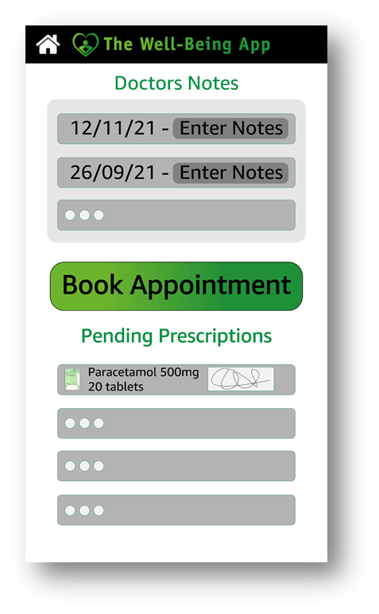

- Patient connect is a section on the app where people can manage their prescriptions and the doctors notes from live chats.
- We offer the option to enable notifications to remind the user to use their prescription before expiry date and reminders to take medication.
- The option of the live chat function allows for faster support to patients which doesn’t have to be face to face, it's non-intrusive which allows for a direct doctor to patient connection and advanced insight into app analytics such as peak app usage hours, chat duration and the patient to doctor relationship.
